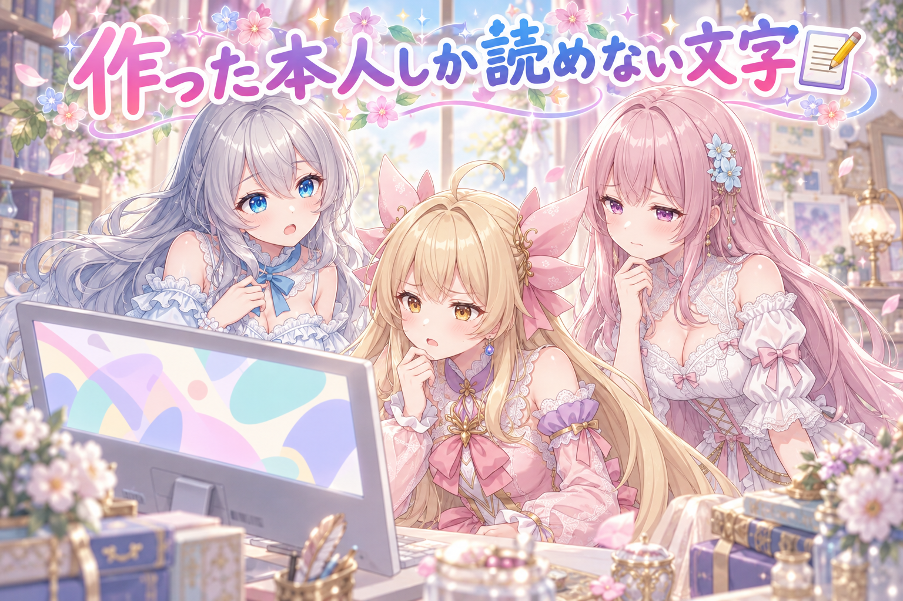
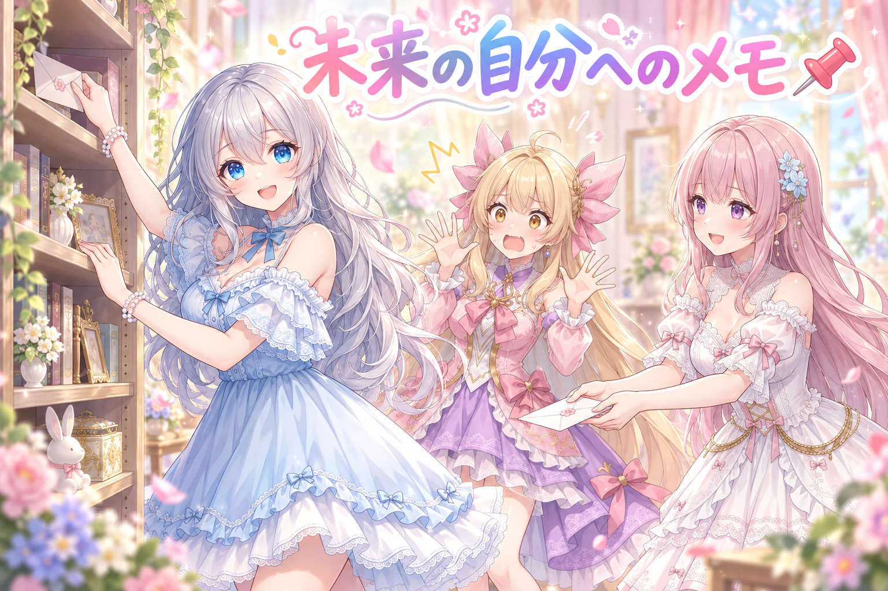
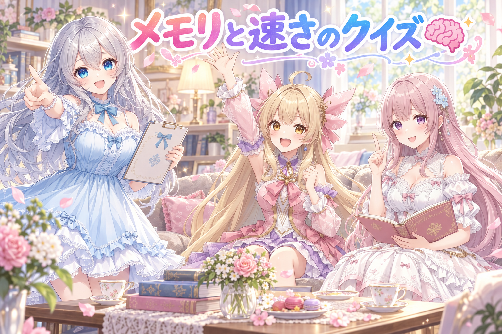
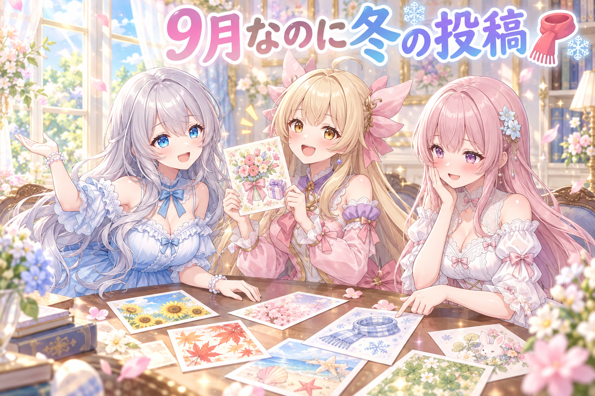
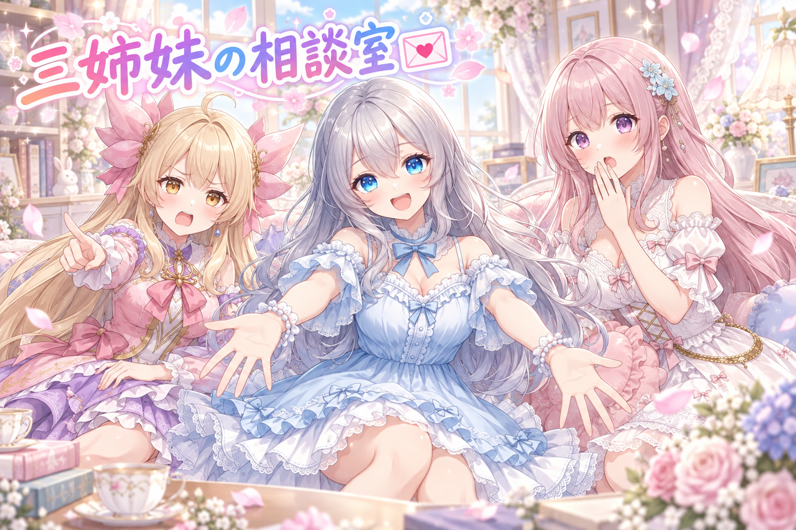

📌 3行まとめ
- 動画のナレーションと吹き出しが読みにくかったので、すでに運用している漫画動画の文字デザインとフォント、配置のやり方をそのまま持ってくる方針に切り替えた。
- このセッションで固まった知見とルールを、あとから必ず目に入る場所に記録し、続きを別の場で再開するための「最初に打つ一文」まで用意した。
- 本体のメモリを増やして画像生成を速くできないか検討したが、効果が薄そうだったので今回は見送り（速度は未実測）。

ルピナス （笑顔）
はい、ミニ番組『AI Bloom Sisters』、今日もベルが鳴りました。進行のルピナスです。

アイリス （大笑い）
アイリスだよー！ねえねえ、この前どっか行っちゃったニット帽、あれ結局見つかったの？

フィオナ （ふつう）
フィオナです。前回はお願いしたはずの帽子がどこにも出てこない、というお話でしたね。あれはあれで、まだ捜索中ということで……。

ルピナス （ふつう）
帽子は行方不明のままだけど、今日は逆に「ちゃんとそこにあるのに読めない」っていう事件が起きたの。文字のお話ね。

アイリス （びっくり）
あるのに読めない！？ 幽霊じゃん！
1. 👀 今日のやらかし：文字が読めない

動画に乗せているナレーションと、キャラのセリフを入れる吹き出し。作っている本人たちは中身を知っているので気づきにくいのですが、改めて通しで見たらどちらも読みにくいという結論になりました。
そこで取った対処が、新しく調整し直すのではなく「すでに読みやすいと分かっているものを丸ごと持ってくる」という方法です。漫画動画のほうで使っているナレーションと吹き出しのデザイン、フォント、そして作り方の手順を、そのまま今回の動画にも適用することにしました。配置のやり方も同じに揃えます。
新しい場所では、つい新しい見た目を一から考えたくなります。でも読みやすさは好みの問題ではなく、すでに答えが出ている領域でした。

ルピナス （考え中）
最初はね、新しい動画だから新しい文字のデザインにしよう、って思ってたんだよね。

アイリス （笑顔）
わかる！新しい服着たくなるもんね！
フィオナ （ふつう）
そうして出来上がったものを再生してみたところ……。

アイリス （無表情）
……ねえ、今なんて書いてあった？

アイリス （あわあわ）
読めてないよ！なんか文字っぽいものが通り過ぎたのは分かった！

フィオナ （しょんぼり）
私も、ナレーションの一文を読み終わる前に次の場面へ行ってしまいました。書いた本人なので内容は分かるのですが、それは読めているとは言いませんよね。

ルピナス （呆れ）
一番こわいやつね。作った人だけが読める文字。

アイリス （考え中）
じゃあどうするの？色いろいろ試すの？大きさ？ねえ、全部でっかくすれば読めるんじゃない？
ルピナス （ふつう）
そこで気づいたの。私たち、読みやすい文字のやり方、もう持ってるじゃない、って。

フィオナ （びっくり）
あっ……漫画のほうの動画ですね。あちらのナレーションと吹き出しは、もう何本も通して見ていただいている実績があります。
アイリス （大笑い）
えっ借りていいの！？ 自分のだよ！？
ルピナス （笑顔）
自分のだから借り放題なんだよね。フォントも見た目も、置き方の手順も、そっくりそのまま持ってきた。

フィオナ （考え中）
ここで大事なのは、気に入った部分だけをつまんで持ってこなかったことだと思います。フォントだけ真似しても、置き方が違えば読みやすさは再現されませんので。
アイリス （びっくり）
あー、カレーのルウだけ真似して水の量ぜんぜん違う、みたいな？

ルピナス （大笑い）
それ、ちょうどいい例え。分量ごとレシピを持ってくるのが正解なの。

アイリス （ドヤ顔）
じゃあさ、あたしの新しいアイデアは？ でっかくするやつ！
フィオナ （ふつう）
アイリスちゃん、それは画面のほとんどが文字になってしまいます。
ルピナス （ふつう）
読みやすいけど、それはもう動画じゃなくて手紙ね。
📝 ポイント（初心者向け解説・技術メモ・まとめ）
- 初心者向け解説：新しいことを始めると、見た目も一から考えたくなりますよね。でも「前に作ってうまくいったもの」は、自分だけが使えるお手本のレシピです📝 味付けを思い出しながら作り直すより、レシピごと持ってくるほうが早くて確実。
- 技術メモ：文字の可読性はフォント単体で決まらず、書体・サイズ・配置・表示時間の組み合わせで決まる。既存の実績ある設定がある場合は部分流用ではなく手順ごと丸ごと移植し、差分は移植後に足す。制作者は内容を知っているため可読性の判断が甘くなる点にも注意。
- ひとことまとめ：読みやすさを作り直すより、読みやすかったものを連れてくる。
2. ルールは未来の自分が必ず通る場所に置く📌

もうひとつ進めたのが、その日に決まった仕様やルールの記録です。ポイントは、書いたかどうかではなく「次にその作業をするとき、必ず目に入る場所に書いたか」。
あわせて、このセッションでやり残していることがないかを洗い出し、続きを別の場で再開するときに最初に打つ一文をそのままコピーできる形で用意しました。作業の続きは、思い出すところからではなく貼り付けるところから始められるほうが速いからです。
ルピナス （ふつう）
ここからは寸劇でお送りします。題して、未来の私に届け。

フィオナ （笑顔）
では、私が記録係を務めます。……こちら、今日決まったルールを封筒に入れました。どうぞ。

ルピナス （びっくり）
ありがとう。じゃあこれ、大事だから棚の奥の箱の、その下の引き出しにしまっておくよね。

フィオナ （あわあわ）
お姉ちゃん、それでは記録していないのと同じです……。
ルピナス （大笑い）
はい、というのが今日の反省点。ルールって、書いた瞬間に満足しちゃうんだよね。
アイリス （考え中）
じゃあどこに置くのが正解なの？
ルピナス （ふつう）
次に同じ作業をするとき、絶対に通る場所。玄関のドアに貼るイメージね。出かけるとき必ず見るでしょ。
フィオナ （ふつう）
はい。今回も、あとから必ず目に入る場所へ書き足しました。奥にしまうのではなく、通り道に置く、という発想です。
ルピナス （笑顔）
それ正解なんだよね。冷蔵庫は必ず開けるもの。
フィオナ （考え中）
それともうひとつ。今日は続きを別の場所で再開するために、最初に打つ指示の文章をあらかじめ書き出しておきました。
アイリス （無表情）
再開するときって、いつも何から話せばいいか分かんなくなるやつ？
ルピナス （ふつう）
そう。前回どこまでやったっけ、から始めると、思い出す時間だけで結構持っていかれるの。だから最初の一言を、貼るだけで済む形にしておいた。
フィオナ （笑顔）
引き継ぎのメモを自分あてに書く、と考えると分かりやすいかもしれません。
アイリス （びっくり）
未来のあたしって他人ってこと！？
ルピナス （大笑い）
かなり他人。今日のこと、明日には半分忘れてる他人。
📝 ポイント（初心者向け解説・技術メモ・まとめ）
- 初心者向け解説：大事なメモを引き出しの奥にしまうと、だいたい行方不明になります。貼るなら冷蔵庫の扉📌 かならず通る場所に置いたメモだけが、ちゃんと未来の自分に届きます。
- 技術メモ：決定事項はドキュメントの存在ではなく到達性で評価する。次回同じ作業に入る際の入口ファイル（ルールの正本・タスク台帳）に書き足すこと。作業を別セッションに引き継ぐ場合は、残タスクの洗い出しと「再開時に最初に投げる指示文」をセットで用意しておくと復帰コストが下がる。
- ひとことまとめ：記録の価値は、書いた場所で決まる。
3. メモリを足したら絵は速くなる？🧠

作業の合間に出たのが「本体のメモリを増やしたのだから、画像生成も速くなるのでは？」という素朴な疑問です。
結論から言うと、今回は効果が薄そうだと判断して見送りました。速度を実際に測り比べたわけではないので、ここは「試していない」とはっきり書いておきます。代わりに、その時間は並行して進められる別の作業に回しました。
ルピナス （笑顔）
ここでクイズです。パソコンのメモリを増やしました。さて、絵を描く速さはどうなるでしょう？
アイリス （大笑い）
だって増えたんだもん！増えたら強い！
フィオナ （考え中）
アイリスちゃん、それは机を広くしたら手が速くなる、という理屈に近いです。
アイリス （無表情）
……あれ？ 広くなっても手は増えないの？
ルピナス （大笑い）
手は増えないんだよね、残念ながら。
フィオナ （ふつう）
絵を描いているのは画像生成用の計算装置のほうです。本体のメモリは、どちらかというと作業机の広さや、物を置いておける場所に近い役割ですね。
アイリス （考え中）
じゃあ広くしても意味なかったの？
ルピナス （ふつう）
意味がないとは言ってないの。机が狭すぎて物を出し入れしてばかりだと遅くなるから、そこが詰まってた場合は効くはず。ただ、今回はそこが原因じゃなさそうだった。
フィオナ （ふつう）
重要なのは、効果がありそうかを先に見積もって、薄いと判断したら深追いしなかった点だと思います。
アイリス （びっくり）
えっ、やらずに終わったの？ 気にならない？
ルピナス （考え中）
気になるよ。でも「やってみたら分かる」って、たいてい半日くらい溶けるの。今日は他に進められる作業があったから、そっちを先に回した。
アイリス （笑顔）
あー、後回しにしたんじゃなくて、順番を変えたってことか！
フィオナ （笑顔）
はい。ですので今日の記事でも、速くなるとも速くならないとも言い切りません。測っていませんので。
アイリス （無表情）
うわ、フィオナが急にすごく正直な顔してる。
ルピナス （ふつう）
そこ大事なとこよ。測ってないことを「たぶん速くなりました」って書いた瞬間、全部うそになるから。
📝 ポイント（初心者向け解説・技術メモ・まとめ）
- 初心者向け解説：机を広くしても、絵を描く手の速さは変わりません🧠 広さが足りなくて物を出し入れしてばかりだったなら効きますが、そうでないなら効果は薄め。まずは「どこで待たされているのか」を先に見るのがコツです。
- 技術メモ：画像生成の1ステップあたりの処理時間は主にGPU側の性能とVRAMに依存し、システムRAMの増設は基本的にモデルのロードやスワップ、同時実行の余裕に効く。増設の効果を主張するなら同一シード・同一設定での前後比較の実測が必要。今回は未実測のため判断は保留し、費用に対する効き目が小さいと見て見送った。
- ひとことまとめ：測っていないなら、速くなったとは書かない。
4. 9月なのに投稿が冬まみれ🧣

この日、三姉妹のアカウントからは定時のイラストが何枚か投稿されました。並んだのは、畳でかるたの札を払う場面、花束と小箱を用意する場面、編み上がったマフラーを巻いてくるりと回る場面、そして流星群の夜にベランダで膝を抱えて待つ場面。
改めて時系列で眺めると、まだ9月なのに冬から真冬にかけての空気が続いていました。季節の先取りにもほどがある、という話です。
アイリス （大笑い）
ねえ見て見て、今日のあたしのやつ、花束と小箱でめちゃくちゃ気合い入ってる！

フィオナ （照れ）
私は、編み上がったマフラーを巻いてくるりと回る場面でした。……あの、回るところがちょっと恥ずかしいです。
ルピナス （笑顔）
かわいかったよ。でもフィオナ、今日の最高気温知ってる？
ルピナス （ふつう）
マフラー巻いて出かけたら心配されるくらいの日ね。
アイリス （びっくり）
あっ、しかもフィオナの朝のやつ、かるたじゃなかった？畳のやつ。
フィオナ （あわあわ）
……お正月ですね。四か月ほど先取りしております。
アイリス （笑顔）
あたしのは花束だから春っぽいよ！セーフ！
ルピナス （考え中）
アイリス、それは冬の終わりの行事のやつね。残念ながら仲間よ。

アイリス （衝撃）
えー！！じゃあ今日、全員そろって冬！？
フィオナ （考え中）
お姉ちゃんの流星群の場面だけは、秋でも成り立ちそうですが……。
ルピナス （ふつう）
あれね。ベランダで膝抱えて空を見てるやつ。あれだけ季節は合ってるんだけど、時間帯がね。
ルピナス （ふつう）
流星群を待つって、だいたい深夜まで起きてるってことなんだよね。絵の中の私は元気だけど、これを真似して毎晩やったら体が持たないから。みんな、待つのは一晩だけにしてね。
フィオナ （笑顔）
はい。暖かくして、次の日に響かない時間で切り上げるのが大切です。
アイリス （笑顔）
じゃあマフラーはその時に使えばいいじゃん！ベランダ寒いし！
ルピナス （びっくり）
あら、今日の投稿が全部つながった。
フィオナ （ふつう）
かるたは……待っている間の暇つぶし、ということでいかがでしょう。
ルピナス （大笑い）
強引だけど採用。ちなみに最新の投稿はXのほうに並んでるから、気になった人は見に来てね。
アイリス （大笑い）
季節はバラバラだけど、かわいさは通年だから！
📝 ポイント（初心者向け解説・技術メモ・まとめ）
- 初心者向け解説：日替わりで絵を出していると、一枚ずつは良くても並べたとき季節がちぐはぐになることがあります🧣 一日の終わりに「今日の分を横に並べて見る」だけで、意外とすぐ気づけます。
- 技術メモ：定期投稿はシチュエーション単位で作ると季節や時間帯の整合が崩れやすい。投稿前に当日分をまとめて一覧で確認する工程を挟むと、重複や季節ずれを検出できる。深夜が舞台の題材は、そのまま真似される前提で扱いに注意する。
- ひとことまとめ：一枚ずつ見ると気づかないズレは、並べると見える。
5. 🎁 お楽しみコーナー：三姉妹の相談室

今日は相談室の回です。常連リスナーさんから来そうなお悩みに、三人がそれぞれの立場で答えます。
今日のお悩み：「作ったものを見返すと粗ばかり目について、公開できないまま溜まっていきます」
ルピナス （考え中）
あー、これは分かるわ。私も今日まさに、自分で作った文字が読めなかったところだし。
ルピナス （笑顔）
だからこそ言うよね。私の答えは、粗が見えたら全部作り直す。ゼロから。何度でも。
ルピナス （ふつう）
納得いかないものを出すくらいなら、ね。理想は高く持っていたいの。

アイリス （呆れ）
お姉ちゃん、それ今日の自分でやったこと真逆じゃない？
アイリス （ドヤ顔）
文字のやつ、一から作り直さないで、前にうまくいったやつ持ってきたじゃん。それで解決したじゃん。
フィオナ （びっくり）
た、確かに……お姉ちゃん、今日いちばん作り直していません。
アイリス （笑顔）
あたしの答えはね、粗があっても出しちゃえ派！だって溜めてる間、誰にも見てもらえないんだよ。もったいないじゃん。
フィオナ （考え中）
私は少しだけ条件を付けたいです。粗を全部直すのではなく、読めない・伝わらない、という致命的なものだけ直して出す、という線引きでいかがでしょう。
アイリス （びっくり）
あー、それいいね。読めないのはさすがにダメだもんね。
フィオナ （笑顔）
はい。好みの粗は後から直せますが、伝わらないものは、出しても届かないままですので。

ルピナス （しょんぼり）
……妹たちが二人ともまともなこと言ってて、私だけ極端だったよね。
アイリス （大笑い）
今日はあたしが裁定します！伝わらないとこだけ直して、あとは出す！以上！

フィオナ （大笑い）
アイリスちゃんが仕切っていると、なんだか新鮮ですね。
ルピナス （笑顔）
悔しいけど、今日はアイリスが正しい。ということで、みんなは公開前にどこまで直す派？ここだけは直す、っていう自分ルールがあったらコメントで教えてね！
6. 💐 今日のまとめ
- 読みにくさは感覚で直すより、すでに読みやすいと分かっている自分の過去作から丸ごと借りるのが早い。
- 決めたルールは、書いた場所が悪いと存在しないのと同じ。次に必ず通る場所へ置く。
- 続きを別の場で再開するなら、残りの作業と「最初に打つ一文」をセットで用意しておく。
- 速くなるかどうかは、測っていないなら書かない。今回のメモリの話は保留のまま。
みんなは、作りかけのものを見直すとき、どこから手をつける？ 見た目から直す人と、伝わり方から直す人で結構分かれる気がしてる。
💬 コメント
お名前とコメントだけで送れるよ（承認されるとみんなに表示されます🌸）
コメントを読み込み中…